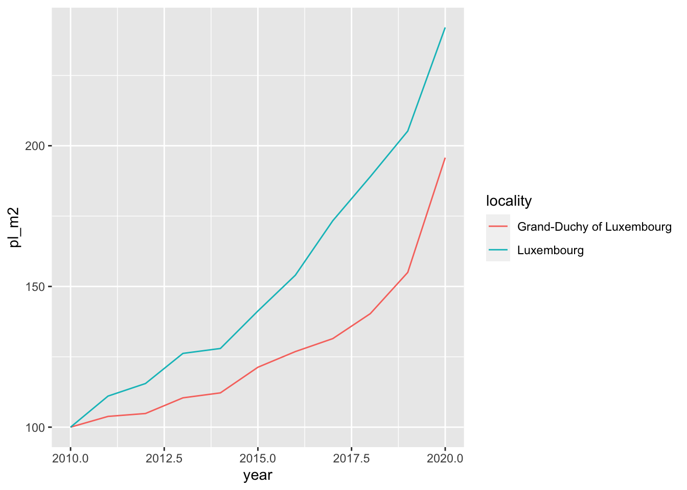
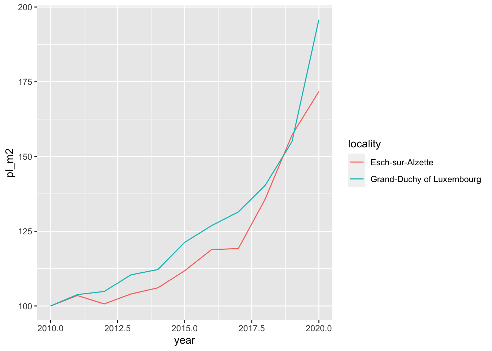
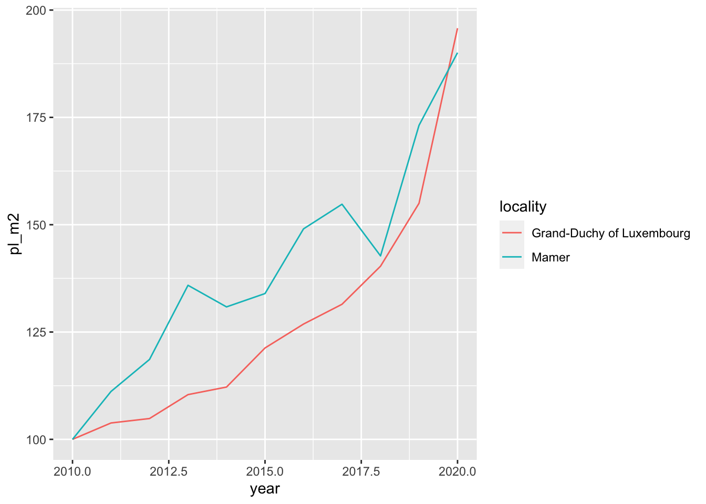
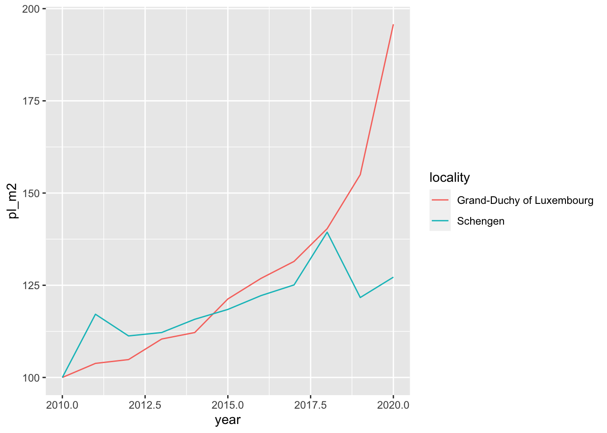
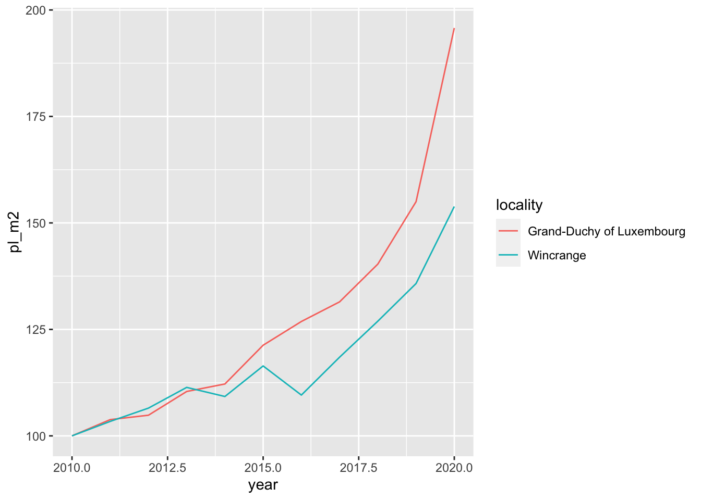

commune_level_data <- read.csv("datasets/house_prices_commune_level_data.csv")
country_level_data <- read.csv("datasets/house_prices_country_level_data.csv")Nominal house prices data in Luxembourg
Load the Data Sets
Laspeyeres index
Let’s compute the Laspeyeres index for country and commune level
get_laspeyeres <- function(dataset){
which_dataset <- deparse(substitute(dataset))
group_var <- if(grepl("commune", which_dataset)){
quo(locality)
} else {
NULL
}
dataset %>%
group_by(!!group_var) %>%
mutate(p0 = ifelse(year == "2010", average_price_nominal_euros, NA)) %>%
fill(p0, .direction = "down") %>%
mutate(p0_m2 = ifelse(year == "2010", average_price_m2_nominal_euros, NA)) %>%
fill(p0_m2, .direction = "down") %>%
ungroup() %>%
mutate(pl = average_price_nominal_euros/p0*100,
pl_m2 = average_price_m2_nominal_euros/p0_m2*100)
}
commune_level_data <- get_laspeyeres(commune_level_data)
commune_level_data# A tibble: 1,171 × 9
year locality n_offers average_price_nomina…¹ average_price_m2_nom…² p0
<int> <chr> <int> <dbl> <dbl> <dbl>
1 2010 Baschara… 192 593698. 3604. 5.94e5
2 2010 Beaufort 266 461160. 2903. 4.61e5
3 2010 Bech 65 621760. 3281. 6.22e5
4 2010 Beckerich 176 444499. 2868. 4.44e5
5 2010 Berdorf 111 504041. 3056. 5.04e5
6 2010 Bertrange 264 795339. 4266. 7.95e5
7 2010 Bettembo… 304 555628. 3343. 5.56e5
8 2010 Bettendo… 94 495074. 3235. 4.95e5
9 2010 Betzdorf 119 625914. 3343. 6.26e5
10 2010 Bissen 70 516466. 3322. 5.16e5
# ℹ 1,161 more rows
# ℹ abbreviated names: ¹average_price_nominal_euros,
# ²average_price_m2_nominal_euros
# ℹ 3 more variables: p0_m2 <dbl>, pl <dbl>, pl_m2 <dbl>Let’s also compute it for the whole country:
country_level_data <- get_laspeyeres(country_level_data)Visualization
We are going to create a plot for 5 communes and compare the price evolution in the communes to the national price evolution. Let’s first list the communes:
communes <- c("Luxembourg",
"Esch-sur-Alzette",
"Mamer",
"Schengen",
"Wincrange")make_plot <- function(commune){
commune_data <- commune_level_data %>%
filter(locality == commune)
data_to_plot <- bind_rows(
country_level_data,
commune_data
)
ggplot(data_to_plot) +
geom_line(aes(y = pl_m2,
x = year,
group = locality,
colour = locality))
}res <- lapply(communes, function(x){
knitr::knit_child(text = c(
'\n',
'## Plot for commune: `r x`',
'\n',
'```{r, echo = FALSE}',
'print(make_plot(x))',
'```'
),
envir = environment(),
quiet = TRUE)
})
cat(unlist(res), sep = "\n")Plot for commune: Luxembourg

Plot for commune: Esch-sur-Alzette

Plot for commune: Mamer

Plot for commune: Schengen

Plot for commune: Wincrange

Analysis
LASSO
SCAD
Methods
One
Two
Three